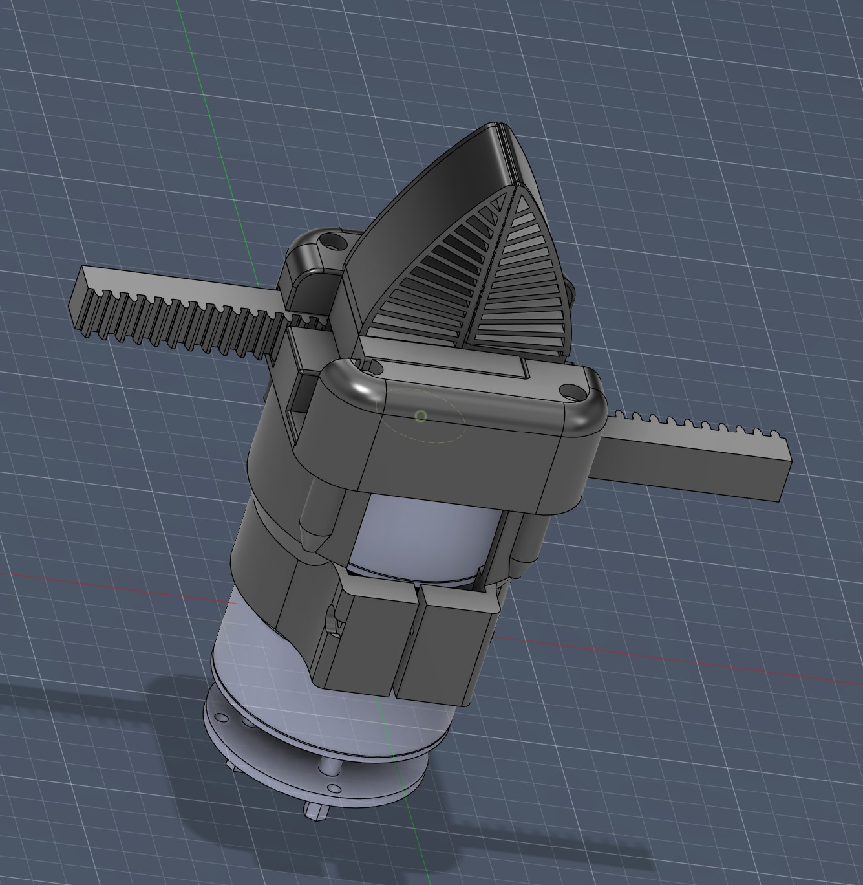
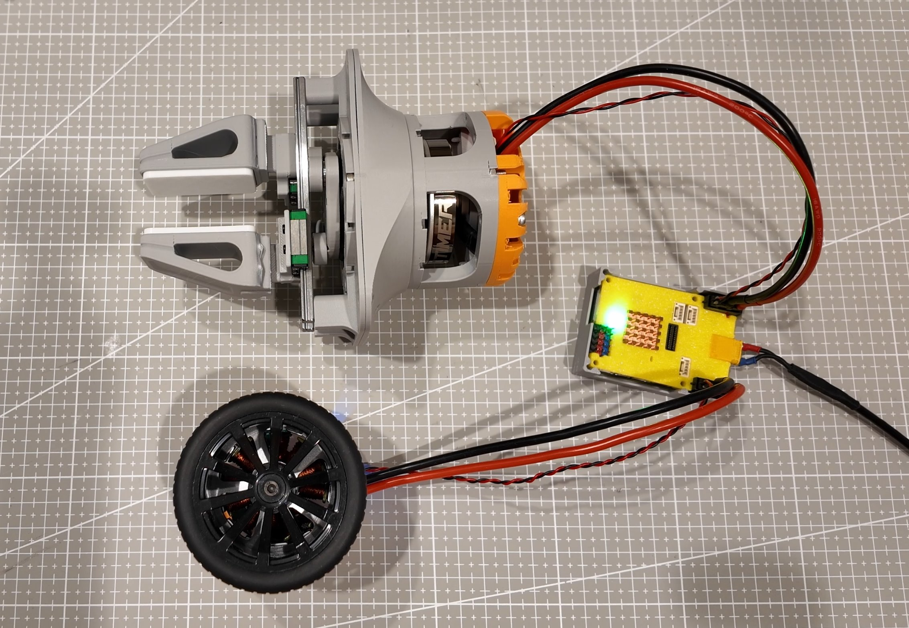
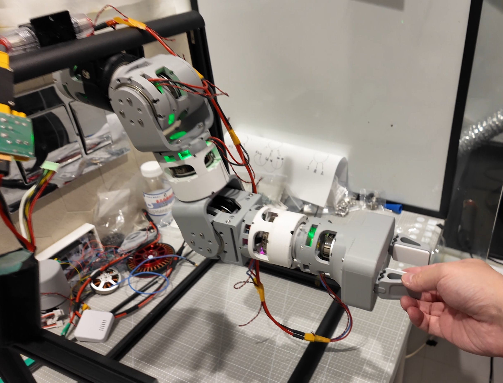
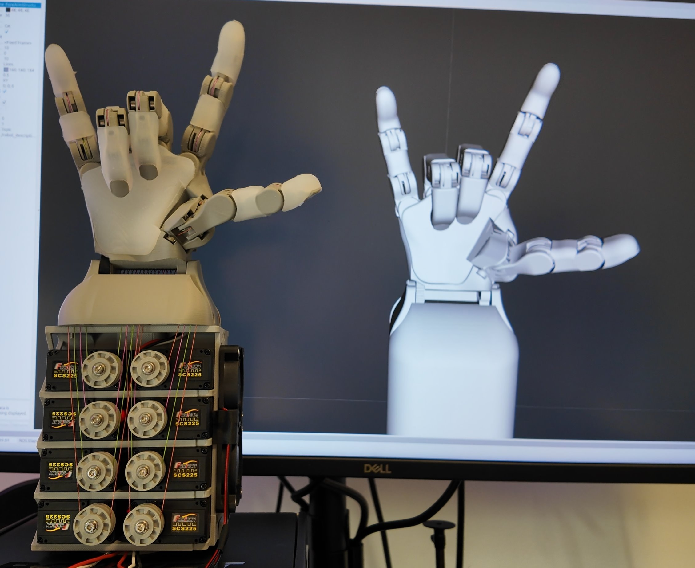
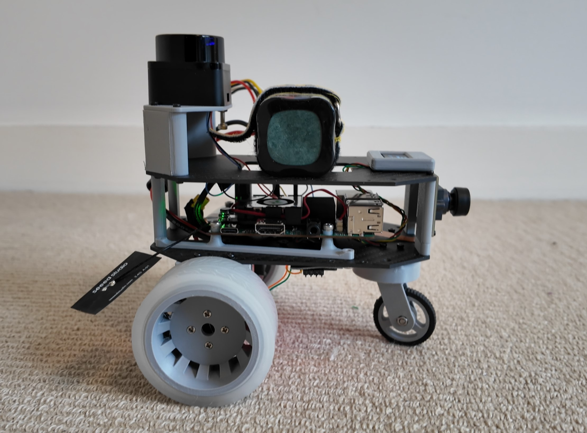
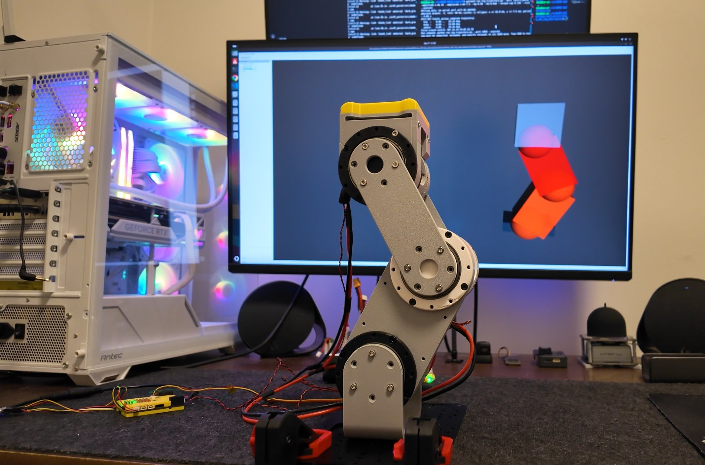

About
Robotics software, from embedded control to autonomy.
I build software for real-world robotic systems, working across embedded firmware, sensor integration, perception, motion control, and autonomous navigation. I enjoy bringing hardware and software together to create dependable, testable systems.
Projects
Selected work

Open Gripper Mini
A compact, 3D-printable gripper with modular parts for desktop and educational robot arms.

Open-Gripper-Plus
An open robotic gripper with a cycloidal gear actuator, dual ODrive control, and STM32H723 firmware.

OpenArm-FOC
An open-source, 3D-printable torque-controlled robotic arm for teleoperation and VLA research.

Orca Core
A Python controller fork for SCS225/ST3215 servos with dual-bus support, calibration, and ROS 2 visualization.

OpenRover ROS 2
A modular mobile robotics platform combining STM32 firmware, ROS 2, SLAM, and autonomous navigation.

5010 3-DOF FOC Kinematic Chain
A reusable three-joint FOC platform with STM32 control, inverse kinematics, and ROS 2/RViz monitoring.
Contact
Let’s build something together.
For project, collaboration, or career enquiries, reach me at: